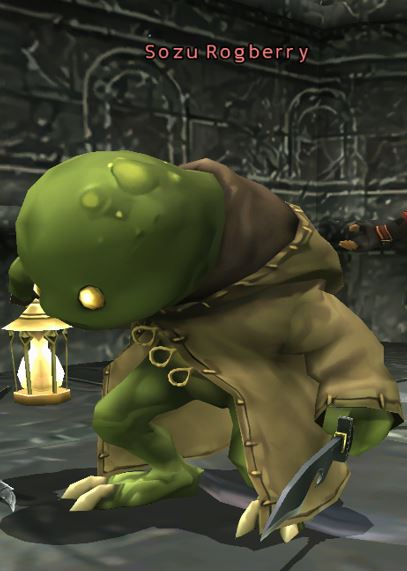

Level 75 reference · Zenith rules
|
Job: Thief Notorious Monster |
 Image source |


|
Zone |
Level |
Drops |
Steal |
Spawns |
Notes |
|
65-66 |
1 |
A, L, S | |||
|
HP = Detects Low HP; M = Detects Magic; Sc = Follows by Scent; T(S) = True-sight; T(H) = True-hearing JA = Detects job abilities; WS = Detects weaponskills; Z(D) = Asleep in Daytime; Z(N) = Asleep at Nighttime | |||||
Notes:
- Forced Spawn by trading a Flickering Lantern to the ??? in the small room at (G-8) of the third map of the Temple of Uggalepih.
- The ??? reappears after 15 minutes.
- Forced Spawn by trading a Flickering Lantern to the ??? in the small room at (G-8) of the third map of the Temple of Uggalepih.
- Killable by: 5 characters level 62; 2 characters level 70; 1 level 72. It is recommended though to be level 74 with Ninja subjob for Utsusemi: Ni.
- Special Attacks: Perfect Dodge, Throat Stab, Everyone's Grudge, Light of Penance, Sigh, Words of Bane
- Has approximately 7000 HP.
- Drops around 3000 gil
Adapted from Eden Wiki: Sozu Rogberry · Contributors and history · CC BY-SA 4.0. Revision 450. Layout, links and optional background text adapted for Zenith.